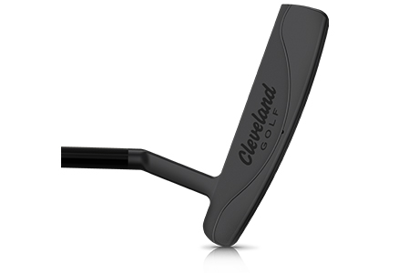

HUNTINGTON BEACH SOFT PREMIER 4 WOMEN PUTTER
Featuring a plumber’s neck blade design, the Huntington Beach SOFT 4 putter provides that classic look that speaks to all players who prefer a blade-style putter. Huntington Beach SOFT Premier 4 delivers a softer feel and better distance control for an improved putting performance.
TECHNOLOGY
Gray Satin Finish
Sleek, Gray Satin PVD finish delivers a premium appearance and instills a sense of confidence.
Speed Optimized Face Technology
Ensuring consistent speed control and distance performance, Cleveland's proprietary Speed Optimized Face Technology normalizes ball speed across the entire face of the putter, even on off-center putts.
Precision Milled Face
A unique diamond CNC milling pattern increases friction for a pure roll and softer feel at impact.
Specs
- Model: 4
- Hosel type: Plumber's neck
- Length: 33", 34", 35"
- Lie: 70°
- Loft: 3°
- Head weight: 345g
- Toe hang: Moderate
- Hand: LH/RH
PRICE
149 € / 159 CHF / 1 599 SEK / 139 £